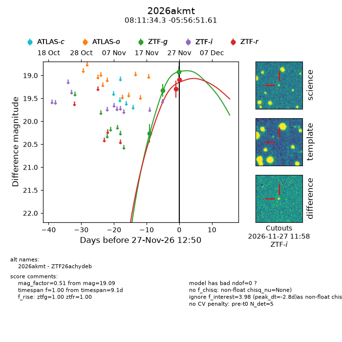
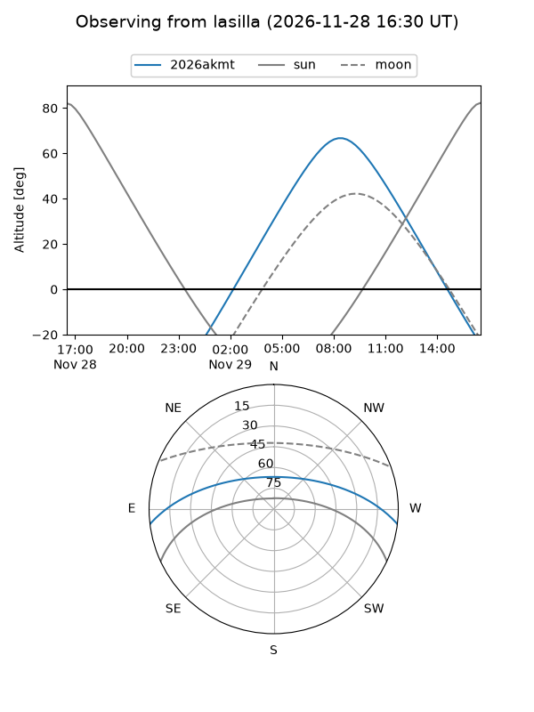
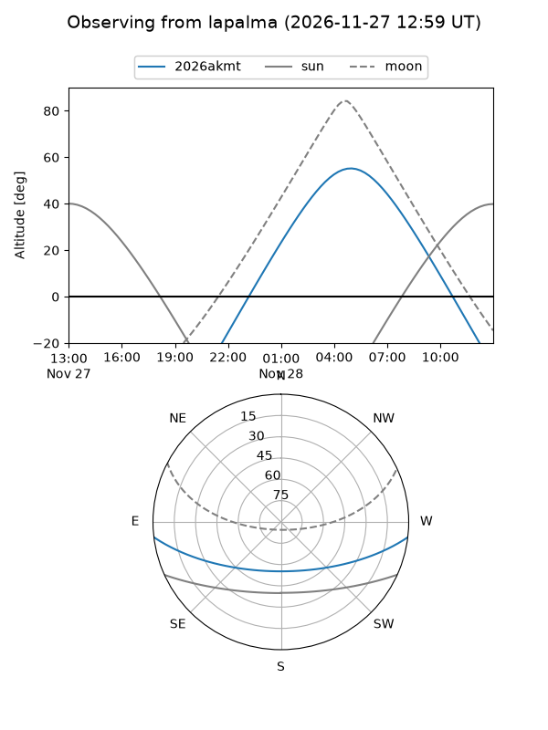
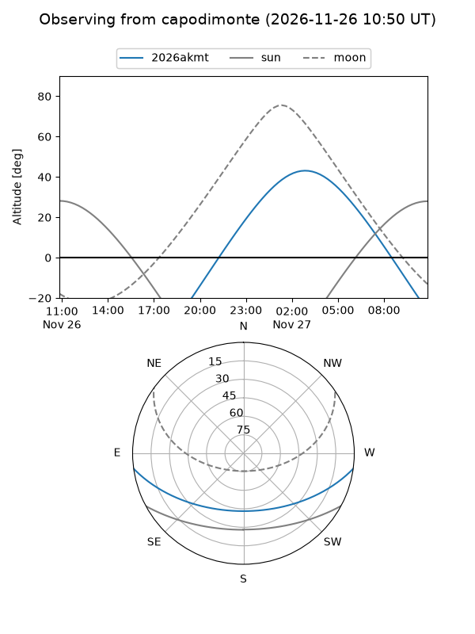
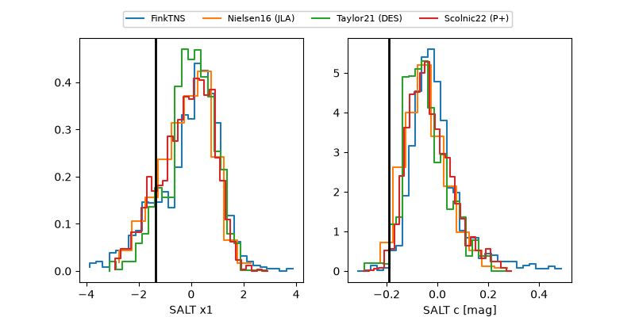

2026akmt
Target 2026akmt at 2026-11-27 12:52
Aliases and brokers:
FINK-ZTF: ztf.fink-portal.org/ZTF26achydeb
Lasair-ZTF: lasair-ztf.lsst.ac.uk/objects/ZTF26achydeb
ALeRCE-ZTF: alerce.online/object/ZTF26achydeb
YSE-PZ: ziggy.ucolick.org/yse/transient_detail/2026akmt
TNS name: wis-tns.org/object/2026akmt
Direct TNS query: direct search
alt names
ZTF26achydeb (ztf,fink_ztf)
2026akmt (tns,yse)
Coordinates:
equatorial (ra, dec) = 122.8929,-5.94767
equatorial (HMS+DMS) = 08:11:34.30,-05:56:51.61
galactic (l, b) = (227.7719,+14.83236)
Flags:
peak dt: -2.8
Photometry:
last ztfg=18.92, ztfr=19.09
3 ztfg, 2 ztfr detections
Lightcurve

Visibility



Additional plots
